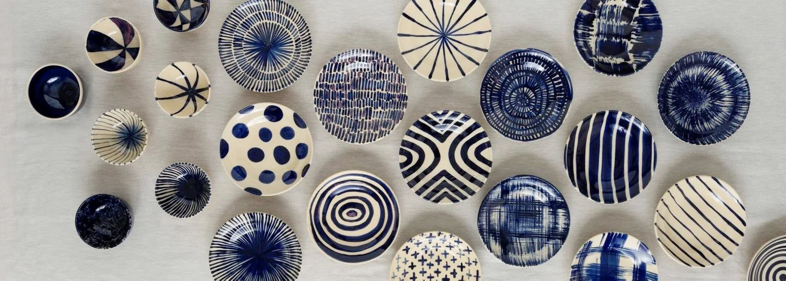
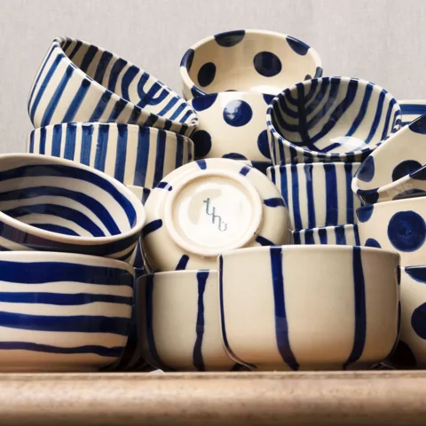

Một góc gốm xanh chàm của TuhúBàn của nhà mình
CHƠI VỚI NĂM SẮC HOÀIChọn màu, thêm chén, đổi chỗ.
Thử xem cả nhà ngồi cùng nhau sẽ thế nào.
Bàn đang trống
Chọn một màu
để bắt đầu nhé.
Chọn một chén trên bàn để xem màu và bỏ từng chiếc.

Chén đẹp cứ dùng hằng ngày.
MỘT CHÚT GỐM TRONG ĐỜI SỐNGVới Tuhú, gốm Sông Bé có mặt trong những bữa cơm hôm nay. Có chiếc chén thích nhất, món gì cũng muốn bày ra thật ngay ngắn.
Ghé nhà Tuhú (mở trang mới)